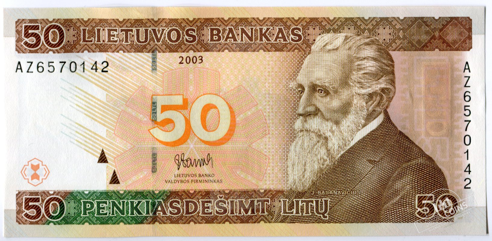

| Nominalas | Pateikiamas vaizdas | Banknoto pavyzdys |
|---|---|---|
| 10 | Lietuvių tautos didvyriai lakūnai Steponas Darius ir Stasys Girėnas. | |
| Žymus lietuvių poetas, tautinio atgimimo dainius Maironis. | ||
| 20 | Jonas Mačiulis-Maironis (1862-1932 m.). Kunigas, teologijos profesorius aktyviai dalyvavo tautiniame judėjime. | |
| Labiausiai žinomas kaip poetas, savo lyrika garsinęs didvyrišką senovę, kvietęs į kovą prieš carizmą, dainavęs meilę Lietuvai ir jos gamtai. | ||
| 50 |  | |
| Tautinio atgimimo pradininkas, istorikas, parašęs pirmąją Lietuvos istoriją lietuvių kalba, Simonas Daukantas. |